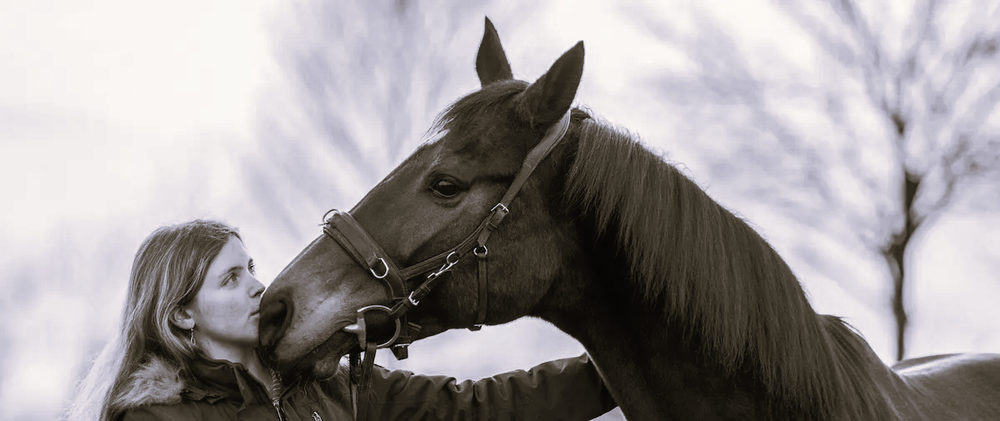

Ich habe nicht in der digitalen Welt angefangen – aber genau das ist heute meine größte Stärke.
Vom Reitplatz in die digitale Welt: Warum ich heute Websites baue, die Handwerk und Kfz-Betriebe wirklich weiterbringen.
Als selbstständige Reitlehrerin habe ich am eigenen Leib erfahren: Gute Arbeit allein reicht oft nicht aus. Wer nicht sichtbar ist, verliert gegen den, der sich besser verkauft – auch wenn die Qualität schlechter ist. Menschen müssen Vertrauen aufbauen können, bevor sie zum Telefonhörer greifen.
Was als Lösung für meine eigene Herausforderung begann, wurde zu meiner Mission: Unternehmen dabei zu helfen, ihre Stärken klar, verständlich und professionell sichtbar zu machen.

Websites, die mehr leisten sollen als nur gut auszusehen. Sie sollen Vertrauen schaffen und Interessenten in Kunden verwandeln.
Pädagogik & Soziologie trifft digitale Umsetzung
Mein Studium der Pädagogik und Soziologie prägt meine Arbeitsweise maßgeblich. Es geht nicht um "hübsches Design", sondern um die Frage: Wie nehmen Menschen Informationen wahr?
Ich übersetze komplexe Themen in logische Strukturen, damit Besucher sich sofort orientieren und Entscheidungen treffen können. Diese Verbindung aus praktischer Selbstständigkeit und wissenschaftlichem Strukturverständnis ist der Kern meiner Arbeit.